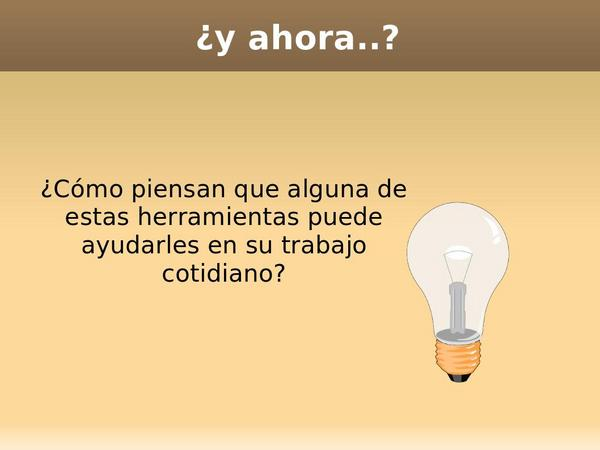

Herramientas para la Construcción Cooperativa a través de Internet
Durante el fin de semana se llevaron a cabo en la ciudad de Santa Fe dos actividades en el marco de una serie de talleres que la fundación Vía Libre está realizando en distintos puntos de América Latina con el objetivo de difundir la filosofía del Software Libre y fomentar su uso. La primera fue una charla a cargo de Beatriz Busaniche presentando el libro MABI (Monopolios Artificiales sobre Bienes Intangibles). La segunda fue concretamente el taller; por la mañana hubo dos charlas (una sobre Copyright también dictada por Bea y una que intentaba responder a la pregunta ¿Cómo funcionan las comunidades de Software Libre? por Nico César).
Durante la tarde se llevó a cabo la parte práctica del taller. De la misma participaron varios miembros del LUGLi y a mi me tocó estar frente al salón. Para facilitarme la tarea preparé unas presentación para explicar los conceptos principales (llevaba como título el mismo de este post) e instalé en mi notebook un blog y un wiki. A través de una red inalámbrica desde las notebooks distribuidas en el salón, grupos de personas podían acceder a estos servicios y hacer sus primeras experiencias con este tipo de herramienta.
Unos días antes del evento empecé a prepara un texto que me sirva como guía para la presentación, pero no tuve tiempo de terminarlo. Luego de la misma lo terminé para ponerlos a disposición de los asistentes y les sirva para repasar algunos de los conceptos que charlamos. A continuación les dejo este texto, es un borrador y no debe tomarse como un texto acabado. Comentarios para mejorarlo son bienvenidos.


Herramientas para la Construcción Cooperativa a través de Internet
La idea del taller es presentar un conjunto de herramientas para la Construcción Cooperativa a través de Internet (presentar los conceptos y utilizarlas en la práctica). Pero.. ¿qué vamos a construir? La palabra más amplia en la que puedo pensar es Conocimiento (Cultura podría también usarse con la misma amplitud pero tal vez en otro contexto). Las herramientas con las que vamos a estar trabajando son usadas por muchas organizaciones alrededor del mundo, incluso por empresas. Hay empresas fabricantes de autos que usan las mismas herramientas que vamos a ver hoy, pero.. no fabrican “Autos” a través de Internet. Sus ingenieros distribuidos en el mundo las usan para confeccionar planos o comunicar especificaciones. En última instancia: Conocimiento.
Las organizaciones sociales como aquellas a las que uds. representan (talleres ecologistas, defensores de los derechos de pueblos originarios y otras) son productores de mucho conocimiento, en distintas formas: libros, cartillas, manifiestos. ¿Son las formas que hoy están utilizando para construir este conocimiento las más apropiadas?¿Los ayudan a hacer un buen aprovechamiento del tiempo? O por el contrario, ¿aveces se encuentran con que la forma que utilizan es un impedimento más que un buen medio?
La segunda pregunta que surge de un título como este (de respuesta más obvia pero igualmente importante) es ¿por que a través de Internet? El ejemplo de los ingenieros nos deja entrever la respuesta: reducir distancias. Es probable que en sus organizaciones no haya personas viviendo en diferentes países, pero el hecho de que algunos vivan en Santa Fe y otros en Rosario ya es suficiente para que no puedan tener discusiones a diario al rededor de una mesa, sobre papeles.
El objetivo del taller es presentarles herramientas que les permitan trabajar en una forma más eficiente a la vez que solucionan problemas como el de la distancia. 3 herramientas: Listas de Correo, Blogs, Wikis.


Listas de correo
Sin preocuparnos por como funcionan por dentro, podemos ver a las listas de correo como una dirección más de correo electrónico, por ejemplo: pas@listas.conosursustentable.org. Asociada a una de estas direcciones hay una lista de suscriptores. Estos suscriptores son direcciones de correo electrónico que en el común de los casos pertenecerán a personas. Por ejemplo la lista de suscriptores de la lista de correo del ejemplo podría estar formada por las direcciones de correo de todos uds.
Cuando una persona suscripta envía un mensaje a pas@listas.conosursustentable.org, todos los suscriptores lo reciben. Si otro suscriptor responde ese mensaje, la respuesta es también recibida por todos los suscriptores. De esta forma se pueden lleva a cabo discusiones en las que todos leen lo que se escribe.
Contenido meditado
Una de las ventajas del correo electrónico (en oposición con otras formas de comunicación de grupos a través de Internet como el chat) es que podemos tomarnos un tiempo para meditar la respuesta, pensar qué responder, investigar antes de hacerlo. Tal vez al hablar de contenido meditado algunos piensen en el correo tradicional, pero la versión electrónica del mismo lo supera en muchas aspectos: costo casi nulo e independiente de la cantidad de copias del mensaje que se envíen y tiempos casi inmediatos, por mencionar los más destacados.
Histórico
Una característica implícita con el uso de listas de correo es la posibilidad de contar con un histórico de mensajes al cual se puede acudir siempre que se quiera consultar un mensaje enviado con anterioridad. Esto es muy útil para resolver conflictos o para evitar repetir discusiones, fácilmente se puede hacer referencia a conclusiones a las que se llegó en algún momento o a respuestas que se dieron en el pasado.
Boletín de noticias
Finalmente mencionar que si esta herramienta no es utilizada como una forma para la discusión diaria, puede utilizarse de todas formas: como Boletín de noticias. Una lista de correos en la cual no se permiten respuestas es una forma muy barata de mantener informados a quienes estén interesados de las actividades que se realizan dentro de una organización.
2 ejemplos concretos
Existen dos formas de tener implementada una lista de correos. La primera es utilizar un software como Mailman que haga el trabajo. Este debe instalarse en un servidor al que se tenga acceso y eso puede no estar al alcance de todos. Por suerte existen servicios gratuitos que nos permiten tener una lista de correos funcionando luego de algunos clicks en su sitio web. Un ejemplo de esto último es el sitio web http://www.e-listas.net.
Durante la presentación mostré como se veía una lista de correos en mi cliente de correo electrónico Thunderbird.


Blogs
Etimológicamente la palabra surge de unir las palabras Web y Log. No hace falta aclarar ya qué es la web y creo que la traducción que mejor se aplica para la segunda palabra en este caso es bitácora. Así es, que este tipo de herramienta nos permiten llevar una bitácora en la web. Nos permiten ir escribiendo a medida que pasa el tiempo porciones de textos, que llamamos posts o entradas, las cuales se van mostrando a los visitantes en orden cronológico inverso.
Otras características de los Blogs son que nos permiten organizar nuestras entradas en categorías y que los visitantes pueden dejar comentarios en ellas.
Creo que llevar un blog por organización sería muy bueno para quienes nos queremos mantener informados sobre sus actividades. Pero.. no voy a estar entrando todos días a ver si escribieron algo nuevo. Llamamos feed a una tecnología que nos permite contar con programas que cada cierto tiempo le pregunten a los blogs si tienen novedades y nos informen de estas. De esta forma podemos leer más en menos tiempo y mantenernos informados sin necesitar hacer recorridos diarios por una cantidad de blogs.
También sería beneficioso para las mismas organizaciones, ya que sería un paso adelante en el uso y la integración de nuevas tecnologías en su tarea diaria.
Planetas en la Blogósfera
El conjunto de todos los blogs que existen en internet es denominado con el nombre de Blogósfera. Llamamos planeta a la agregación de un conjunto de blogs, ya sea por pertenecer a personas que comparten una ubicación geográfica, que escriben sobre un mismo tema o que participan de un mismo proyecto. O cualquier otro criterio.
Nutriéndose de la idea de tener un blog por organización, armar un planeta les permitiría presentarle al mundo una única puerta de entrada (actualizada) a las actividades que realiza el Programa Argentina Sustentable. La actualización de un planeta es automática ya que para los mismos se usa también la tecnología de feeds que antes mencionamos.
2 ejemplos concretos
Cómo sucedía con las Listas de correo, tenemos nuevamente 2 caminos. Si tenemos acceso a un servidor, una alternativa válida es instalar un software como Wordpress (está escrito en PHP y utiliza MySQL como motor de base de datos). Por el camino de los servicios gratuitos pueden usar Blogger (el servicio provisto por Google).
Para materializar los conceptos charlados se trabajó sobre un blog durante algunos minutos.


Wikis
El mejor ejemplo: Wikipedia
La tercer y última herramienta de la que vamos a hablar hoy son los wikis. El mejor ejemplo para empezar a hablar sobre qué son los wikis es Wikipedia, la enciclopedia libre. Seguramente muchos de uds han escuchado hablar de esta enciclopedia o incluso la han consultado en Internet. ¿Alguien se animó a tener la experiencia de editarla?
Un wiki es un sitio web (y hasta acá no tiene nada de diferente de.. otros sitios web :-) con una particularidad. Sus visitantes pueden modificar su contenido. ¿Se necesitan herramientas especiales para hacer esto? No, desde el mismo navegador con el que visitamos el sitio y haciendo click en un enlace etiquetado como “Editar” podemos acceder a una interfaz en la cual modificar la página que estábamos visitando. Esta tecnología nos da la posibilidad de convertirnos en lo que podemos denominar “Prosumidores de información”.
Prosumidores de información
El término “Prosumidor” lo tomo prestado de los Clubes del Trueque y siendo la conjunción de “Productor” y “Consumidor” lo que quiere expresar es justamente el rol de una persona que consume pero que crea a la vez.
Nos damos cuenta de que esto es un cambio muy importante en lo que Internet ES (o por lo menos tiende a ser), ya que la línea que separaba a los productores de información y a los que la consumíamos no es tan gruesa como era.
Más allá de esto, se desprende la posibilidad de producir documentos (por buscar una palabra amplia y representativa) de forma cooperativa de una manera simple e incluso entre personas que están físicamente separadas.
¿Cómo ven esta posibilidad? ¿Sería algo difícil para uds. de empezar a hacer? Asumiendo por un momento que ya disponemos de la herramienta, alguno podría objetar que no sabe hacer páginas web. No es problema, por que no se necesita! Solo se necesitan las mismas habilidades que para usar elementalmente un procesador de texto. Usar un wiki es algo fácil.
Fácil de utilizar
¿Con qué nos encontramos cuando estamos en la interfaz de edición de un wiki? Lo primero que vemos es que no es algo muy distinto a lo que estábamos viendo (es decir, la página original). Pero también es probable que veamos algunos signos que en un primer momento nos parezcan raros. No se preocupen, rápidamente les parecerán normales.
Pero como el movimiento se demuestra andando.. veamos un wiki en acción.
Durante media hora los asistentes al taller trabajaron sobre un wiki.
{kind=link}
Histórico de cambios
Una de las más grandes posibilidades del mundo digital es poder mantener de forma fácil todas las versiones de un documento. Cada cambio es guardado por más mínimo que sea (por ejemplo un tilde en una vocal) es almacenado, puede recuperarse y usarse para comparar con otra versión.
Búsqueda
Además se dispone en casi todos los sistemas de este tipo de un sistema de búsqueda que facilita encontrar documentos creados.
2 ejemplos
Cómo en los casos anteriores tenemos 2 caminos y menciono un ejemplo de cada uno a modo ilustrativo. MediaWiki (podemos instalar el mismo software sobre el que correo Wikipedia). O podemos utilizar un servicio gratuito como el brindado por WikiSpaces.com.
Tengamos en cuenta que siempre vamos a tener 2 caminos y si bien el segundo es probable que sea más fácil, con el primero siempre vamos a tener más control y poder de decisión (algo no despreciable).



Fotos
Pueden encontrarse algunas fotos del evento en: http://lugli.org.ar/mediawiki/index.php/Fotos_del_Taller.
Videos
Gracias a César Portela y Lucas di Péntima podemos disponer de los videos del evento:
Lo dejé compartiendo en ThePirateBay usando bittorrent: http://torrents.thepiratebay.org/3745174/PAS.3745174.TPB.torrent ..son unos 450 MB en total, 3 videos... Por favor, una vez que los descarguen, mantenganlo compartidos por unoscuantos días, asi todos los podemos tener.
Comentarios
Comments powered by Disqus